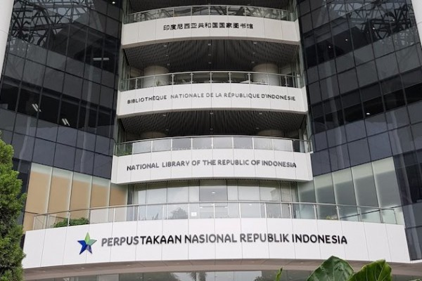
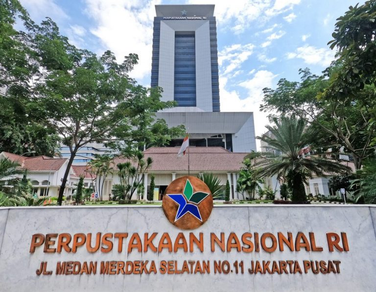

 Perpustakaan Nasional merupakan perpustakaan yang didirikan oleh Pemerintah Negara untuk menyimpan dan melestarikan berbagai buku dan koleks-koleksi naskah bersejarah di Indonesia. Perpusnas di Indonesia berlokasi di Jl. Medan Merdeka Selatan No.11, Rt.11/RW.2, Gambir, Kecamatan Gambir, Kota Jakarta Pusat, DKI Jakarta. Pada tanggal 14 September 2017, Presiden Joko Widodo meresmikan Gedung Fasilitas Layanan Perpusnas baru yang merupakan perpustakaan nasional tertinggi di dunia 126,3 meter dengan 24 lantai, ditambah tiga lantai parkir bawah tanah.
Dilansir dari Kajian Sejarah Perpusnas, setelah Indonesia merdeka, didirikanlah Lembaga Kebudayaan Indonesia dari lembaga yang dibentuk pada zaman Belanda yaitu Bataviaasch Genootschap van Kunsten en Wetenschapen pada tahun 1952. Pada awalnya lembaga ini hanya bergantung pada iurang para anggota, sumbangan para dermawan, hasil penjualan karcis museum, dan penjualan penerbitan. Namun pada tahun 1962, harta kekayaan Lembaga Kebudayaan Indonesia diserahkan sepenuhnya ke Pemerintah Republik Indonesia.
 VISI
"Terwujudnya Indonesia maju yang berdaulat, mandiri, dan berkepribadian berlandaskan gotong royong melalui penguatan budaya literasi"
MISI
"Meningkatkan Perpustakaan sesusai Standar Nasional Perpustakaan, Pelayanan Prima Perpustakaan, dan Pelestarian Bahan Pustaka dan Naskah Nusantara"
KEDUDUKAN
Perpustakaan Nasional merupakan Lembaga Pemerintah Nonkementerian yang berada di bawah dan bertanggung jawab kepada Presiden. Perpustakaan Nasional dipimpin oleh seorang Kepala.
Perpustakaan Nasional RI juga memiliki wewenang. Adapun beberapa wewenang Perpustakaan Nasional RI adalah sebagai berikut:
Kewenangan lain yang melekat dan telah dilaksanakan sesuai dengan ketentuan peraturan perundang-undangan meliputi:
Berikut adalah beberapa fasilitas yang ada di Perpustakaan Nasional beserta lokasinya:
| Fasilitas | Lokasi |
|---|---|
| Layanan Audio Visual | Lantai 8 |
| Layanan Multimedia | Lantai 19 |
| Ruang Baca Koleksi | Lantai 12 dan 12A |
| Layanan Koleksi Monograf Terbuka | Lantai 21 |
| Musholla | Lantai 6 |
Sumber:
Yang mengerjakan tugas ini:
| Nama lengkap | : | Agnes Putri Afdzilla |
| NIM | : | 11210251000053 |
|